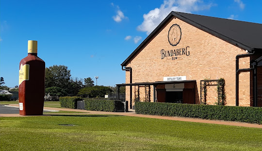

Bundaberg: A Vibrant Hub of History, Agriculture, and Tourism in Queensland

Nestled in the Wide Bay region of Queensland, Bundaberg boasts a rich cultural heritage, a booming agricultural sector, and stunning natural attractions. Known for its sugarcane production and the iconic Bundaberg Rum, the city is a dynamic center for both residents and tourists.
Posted by on
Bundaberg: Exploring the Geographic and Cultural Significance of Queensland’s Unique City

Located in Queensland, Bundaberg is not only a vital agricultural hub but also a city rich in cultural history. Its name reflects local heritage, while Bourbong Street showcases intriguing stories from the past.
Posted by on
The History of Bundaberg: A Journey from Traditional Lands to British Colonization

Bundaberg’s history is deeply rooted in its Aboriginal heritage, shaped by the traditional ownership of the Taribelang, Gooreng Gooreng, Gurang, and Bailai peoples, and marked by the impacts of British colonization beginning in the 1840s.
Posted by on
The Rise of Bundaberg: Cattle, Logging, and the Establishment of a Thriving Town

Bundaberg's development was significantly influenced by cattle ranching and timber logging, transforming the landscape and paving the way for the establishment of the town.
Posted by on
The Sugar Boom and the Evolution of Bundaberg

From early timber exploitation to becoming a major sugar production hub, Bundaberg's development was shaped by agricultural innovation, labor issues, and community resilience.
Posted by on
Bundaberg in the 21st Century

The 21st century has brought significant challenges to Bundaberg, particularly due to natural disasters. In December 2010, the region faced its worst floods in 60 years, as the Burnett River overflowed, inundating hundreds of homes and displacing many residents. This catastrophic event highlighted the town's vulnerability to severe weather conditions.
Posted by on
Bundaberg Demographics and Heritage: A Snapshot of Growth and Cultural Significance

The city of Bundaberg, boasting a diverse population of over 73,000, reflects a rich tapestry of cultures and a commitment to preserving its historical heritage through various significant sites.
Posted by on
Bundaberg’s Climate: A Year-Round Guide to Weather Patterns and Extremes
Bundaberg enjoys a warm humid subtropical climate characterized by hot, wet summers and mild, dry winters, with average annual rainfall of nearly 1,000 millimeters and temperature extremes reaching 40.2°C.
Posted by on